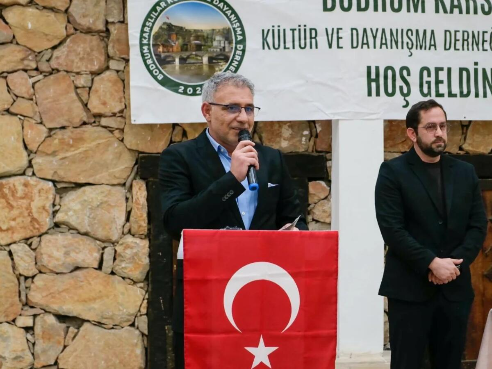

Başkanımızdan
“Şehir yabancı, sokaklar yabancı, insanlar yabancı… Derneğimiz tam da bu sessizliği paylaşmak için kuruldu. Evlerin içindeki sessizliği bölmek, büyüklerimizi bir araya getirmek için kuruldu.”
“Bodrum'da yaşayan birçok büyüğümüz kış aylarında çocuklarının yanına geliyor ve zamanla yalnız kalıyor. Aynı zamanda üç, hatta dört kuşağı bir araya getirmeyi önemsiyoruz. Amacımız; memleket kültürü ile Bodrum'un kültürü arasında bir denge kurmak. Genç bir yönetimimiz var.”
Mehmet Yıldız 2025'te göreve başlayan yönetim kurulumuzun başkanı. Derneği Kaymakamlık ve Milli Eğitim ziyaretlerinden Bodrum Kent TV'nin Açık Görüş programına kadar şehrin her masasında temsil ediyor.
